Manual - Rancher k3s prerequisites
This path builds the demo application image with
Podman and runs it on a local
Rancher Desktop k3s cluster, with
kubectl and nerdctl on your PATH. Start Rancher Desktop if it is not
already running:
$ rdctl start
- In Preferences → Kubernetes, confirm "Enable Kubernetes" is checked (k3s)
- In Container Engine, confirm "containerd" is selected
- Wait for the status indicator to turn green and show "Kubernetes is running"
Manual - Verifying the cluster
Confirm the cluster is up and
kubectl is pointed at it (versions shown might
differ for you):
$ kubectl config current-context
rancher-desktop
$ kubectl get nodes
NAME STATUS ROLES AGE VERSION
lima-rancher-desktop Ready control-plane,master 2d v1.36.2+k3s1
Now that you have the tooling, let's get started...
Manual - Instrumentation by hand
Automatic and programmatic instrumentation gets you most of the way to tracing system interactions, but being able to manually instrument and add metadata specific to your application or business will allow you to derive better insights faster.
Manual - Adding Span Attribute
Attributes are key-value pairs that contain metadata to annotate a span with information about the operation it is tracking
span.set_attribute("KEY","VALUE")
Manual - Adding a Span Attribute
Open manual/app.py and import get_current_span from the API
Then add an attribute tracking the count of homepage loads to the index() method:
Then add an attribute tracking the count of homepage loads to the index() method:
from opentelemetry import trace
from opentelemetry.trace import set_tracer_provider, get_current_span
from opentelemetry.sdk.trace import TracerProvider
from opentelemetry.sdk.trace.export import SimpleSpanProcessor
from opentelemetry.exporter.otlp.proto.http.trace_exporter import OTLPSpanExporter
...
...
@app.route('/')
def index():
span = trace.get_current_span()
global HITS
HITS = HITS + 1
span.set_attribute("hits", HITS)
msg = f'This webpage has been viewed {HITS} times'
return msg
Manual - Build image & run on k3s
Podman builds the image locally, but k3s runs inside Rancher Desktop's own VM with a separate
containerd image store, so the image has to be exported and loaded into the VM's
k8s.io namespace where kubelet looks for it. The pod is then recreated to pick up
the new image. You will repeat this same cycle after every code change in this lab. The
Jaeger image is pulled from the registry, so kubectl wait blocks until the pod is
ready - without it port-forward fails with "unable to forward port because pod is
not running". Note port-forward holds its terminal and dies with the pod, so it is
restarted each time:
$ podman build -t hello-otel:manual -f manual/Buildfile-manual
$ podman save localhost/hello-otel:manual -o hello-otel-manual.tar
$ nerdctl --namespace k8s.io load -i hello-otel-manual.tar
$ kubectl delete -f manual/app_pod.yaml --ignore-not-found
$ kubectl apply -f manual/app_pod.yaml
$ kubectl wait --for=condition=Ready pod/hello-otel-manual --timeout=180s
$ kubectl port-forward pod/hello-otel-manual 8001:5000 16686:16686
Note: if
nerdctl fails with "cannot access containerd socket", your Container
Engine is set to dockerd instead of containerd - either switch it in Preferences, or
use docker load -i hello-otel-manual.tar for every import in this lab.
Manual - Generate Traces
Manual - Verify Span Attribute
Open the Jaeger UI at http://localhost:16686
and search for traces for the operation
/:
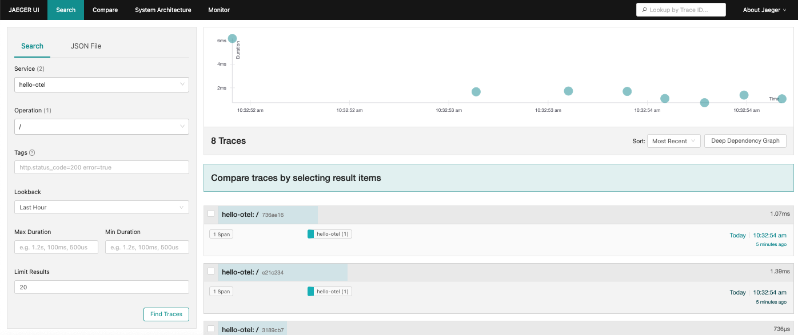
Manual - Verify Span Attribute
Click on a trace and confirm the
hits attribute is in span details:
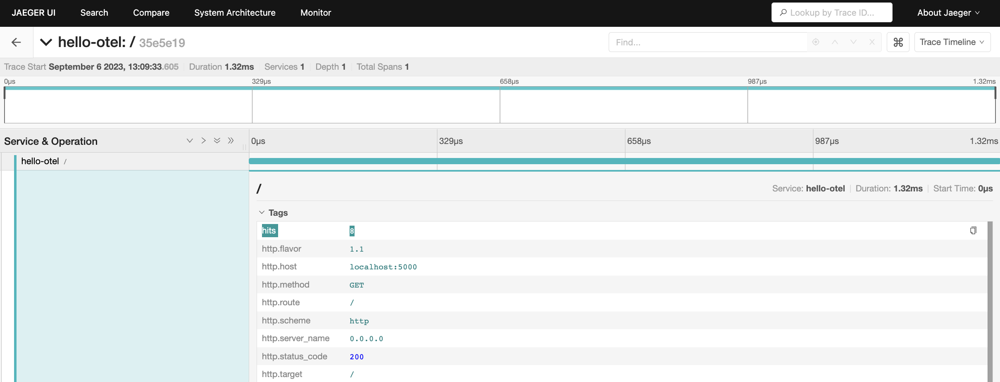
Manual - Deleting the pod
Stop the
port-forward with CTRL-C, then delete the pod and look to adding manually
instrumented nested spans:
$ kubectl delete -f manual/app_pod.yaml
pod "hello-otel-manual" deleted
Manual - Enhancing programmatic instrumentation
The instrumented requests library provides data about requests to the Dog API
but not custom methods get_breed() or validate_breed(). To
capture that work in /doggo traces we can manually instrument nested spans to
reflect the hierarchical relationship:
tracer.start_as_current_span()- creates a new span within the current trace context.
Manual - Access tracer
Open manual/app.py and get access to the global tracer - this is what actually
creates and manages spans:
app = Flask("hello-otel")
FlaskInstrumentor().instrument_app(app)
Jinja2Instrumentor().instrument()
RequestsInstrumentor().instrument()
tracer = provider.get_tracer(app.name)
Manual - Instrument nested span
Continue on down the file by navigating to get_breed() and create
a nested span:
def get_breed(url):
with tracer.start_as_current_span("get_breed"):
path = urllib3.util.parse_url(url).path
match = re.search(r"/breeds/([^/]+)/", path)
if match:
result = match.group(1)
return result
Manual - Rebuild and run on k3s
Run the rebuild cycle again so the cluster picks up your change:
$ podman build -t hello-otel:manual -f manual/Buildfile-manual
$ podman save localhost/hello-otel:manual -o hello-otel-manual.tar
$ nerdctl --namespace k8s.io load -i hello-otel-manual.tar
$ kubectl delete -f manual/app_pod.yaml --ignore-not-found
$ kubectl apply -f manual/app_pod.yaml
$ kubectl wait --for=condition=Ready pod/hello-otel-manual --timeout=180s
$ kubectl port-forward pod/hello-otel-manual 8001:5000 16686:16686
Manual - Generating several traces
In a browser, make a few requests to
http://localhost:8001/doggo
Manual - Verify nested span
Open the Jaeger UI at http://localhost:16686
and search for traces for the operation
/doggo. You should see that the span
count has increased but to confirm, click on a trace:
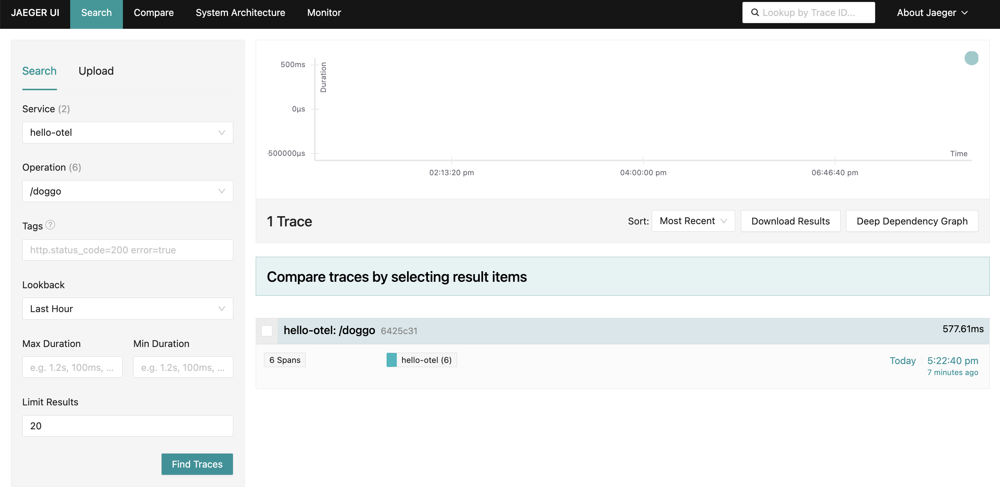
Manual - Verify nested span
The trace waterfall should show one span for the overall request to
/doggo,
the GET request to the Dog API, and the operation
get_breed() to give a fuller picture of where time is spent
fulfilling requests to /doggo:
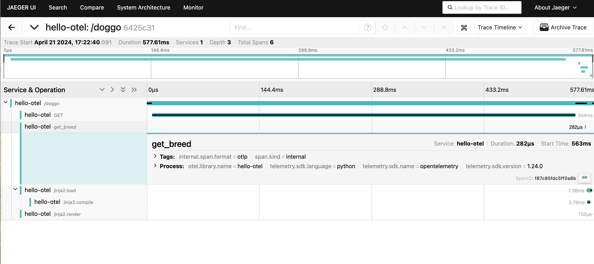
Manual - Visualizing a trace graph
The trace waterfall is one of many ways to visualize a trace. Click on the menu in the upper right
corner and select Trace Graph:
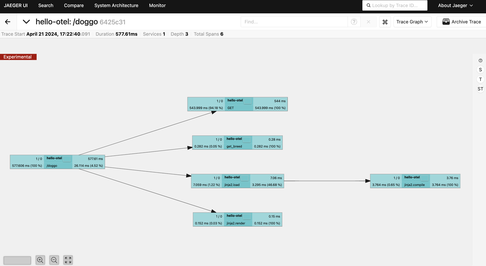
Manual - Trace graph by time
Clicking on the T over on the right hand vertical menu bar colors the
critical path, or the spans that directly contribute to the slowest path of
processing this request:
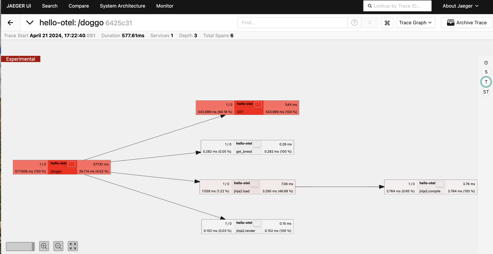
Manual - Visualizing complex trace graphs
While we are working with small traces today, this example with 160 spans shows how powerful
this birds eye view can be for more complex traces:
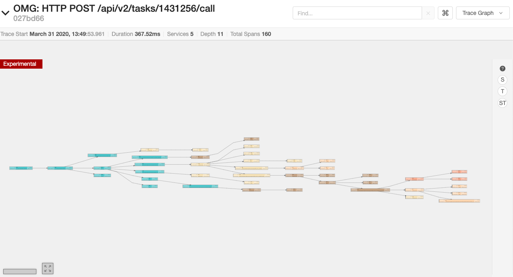
Manual - Deleting the pod
Stop the
port-forward with CTRL-C, then delete the pod and move on to adding more
span events:
$ kubectl delete -f manual/app_pod.yaml
pod "hello-otel-manual" deleted
Manual - Adding span events
An event contains a structured log with a name and 1+ attributes and a timestamp:
span.add_event(name, attributes)- adds structured annotation to current span
Manual - Add span event
Open manual/app.py and add a span event representing the result of the dice roll to
the roll_dice() method:
@app.route("/rolldice")
def roll_dice():
sp = trace.get_current_span()
result = do_roll()
sp.add_event("rolled dice",attributes={"result":result})
return result
Manual - Rebuild and run on k3s
Run the rebuild cycle again so the cluster picks up your change:
$ podman build -t hello-otel:manual -f manual/Buildfile-manual
$ podman save localhost/hello-otel:manual -o hello-otel-manual.tar
$ nerdctl --namespace k8s.io load -i hello-otel-manual.tar
$ kubectl delete -f manual/app_pod.yaml --ignore-not-found
$ kubectl apply -f manual/app_pod.yaml
$ kubectl wait --for=condition=Ready pod/hello-otel-manual --timeout=180s
$ kubectl port-forward pod/hello-otel-manual 8001:5000 16686:16686
Manual - Generate traces
Open a browser and make a couple of requests to:
http://localhost:8001/rolldice
Manual - Verify span event
Open the Jaeger UI at http://localhost:16686
and search for traces to
/rolldice and click on a trace:
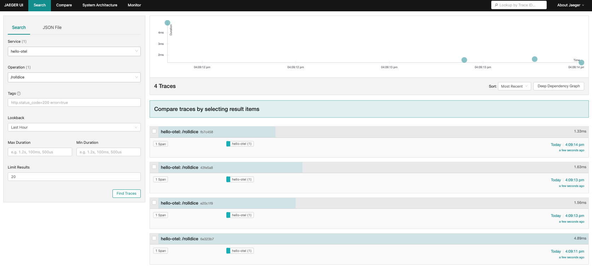
Manual - Verify Span Event
Note that the timestamp associated with this span event is relative to the start time of the
trace itself:
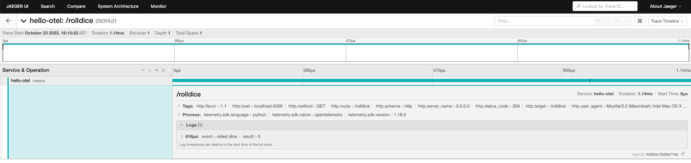
Manual - Deleting the pod
Stop the
port-forward with CTRL-C, then delete the pod and move on to exploring
span status:
$ kubectl delete -f manual/app_pod.yaml
pod "hello-otel-manual" deleted
Manual - What is Span status
A span status is typically used to identify spans that have not completed successfully and can
be set any time before the span is finished.
Spans can have a status of: Unset, OK, or Error.
Spans can have a status of: Unset, OK, or Error.
- span.set_status(status,description)
Manual - Span status for /doggo
The /doggo page allows users to search for images of a specific dog breed.
If the search term is invalid, an error message is returned to the user and the request
successfully returns 200 OK.
If we consider invalid searches to be errors, we need to instrument validate_breed(). This will not make the entire trace "failed" but noting the error on a span will be helpful visibility!
If we consider invalid searches to be errors, we need to instrument validate_breed(). This will not make the entire trace "failed" but noting the error on a span will be helpful visibility!
Manual - Adding a Span status
Open manual/app.py and locate validate_breed() - create a
nested span and add an attribute for breed to help us understand what the user was searching for:
def validate_breed(breed):
with tracer.start_as_current_span("validate_breed") as span:
span.set_attribute("breed", breed)
if breed not in breeds:
raise ValueError("No breed found.")
return
Manual - Rebuild and run on k3s
Run the rebuild cycle one last time so the cluster picks up your change:
$ podman build -t hello-otel:manual -f manual/Buildfile-manual
$ podman save localhost/hello-otel:manual -o hello-otel-manual.tar
$ nerdctl --namespace k8s.io load -i hello-otel-manual.tar
$ kubectl delete -f manual/app_pod.yaml --ignore-not-found
$ kubectl apply -f manual/app_pod.yaml
$ kubectl wait --for=condition=Ready pod/hello-otel-manual --timeout=180s
$ kubectl port-forward pod/hello-otel-manual 8001:5000 16686:16686
Manual - Generating several traces
Open a browser and make several requests to the
http://localhost:8001/doggo
Search for valid dog breeds like "doberman" or "Akita" and nonsense terms like "woof":
/doggo endpoint:http://localhost:8001/doggo
Search for valid dog breeds like "doberman" or "Akita" and nonsense terms like "woof":
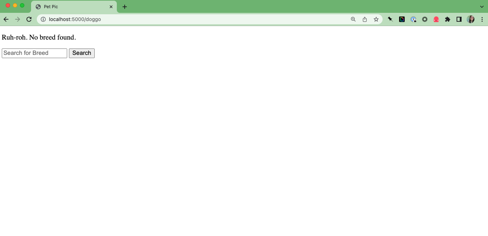
Manual - Verify span status
Open the Jaeger UI at http://localhost:16686
and search for traces for the operation
/doggo. Verify that there is at
least one trace with a successful request marked with an error. Click that trace to see the
detail view:
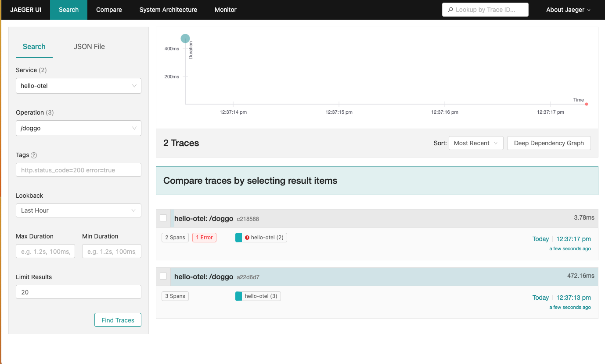
Manual - Verify span status
Confirm that the error message is recorded on the search_breed span and that the
breed is recorded as a span attribute:
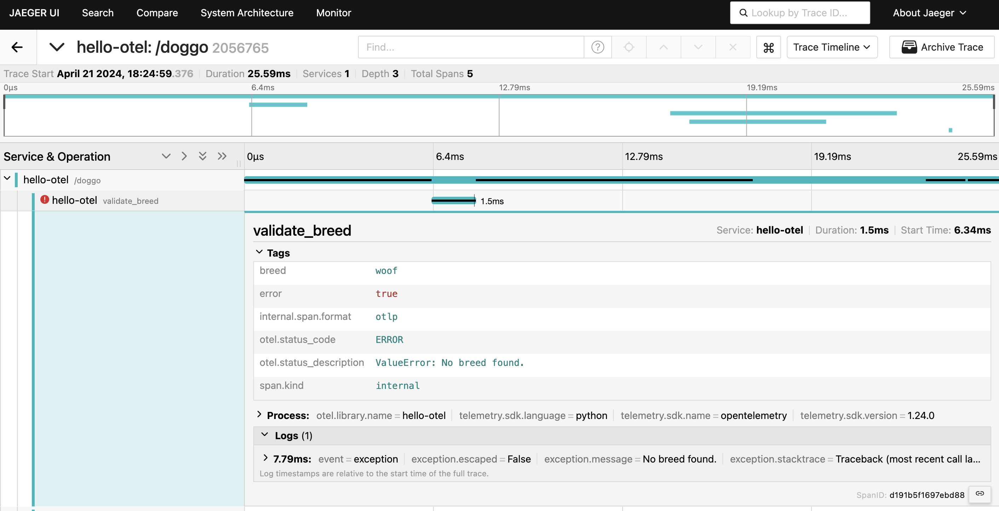
Lab completed - Results
We combined programmatic and manual instrumentation to enhance the visibility provided by traces
including created nested spans, adding attributes, recording errors and searching the
OpenTelemetry registry.
Next up, linking distributed traces to application metrics!

Contact – are there any questions?
Eric D. Schabell
Technology Advocate Lead
Contact: @ericschabell {@fosstodon.org) or https://www.schabell.org
Technology Advocate Lead
Contact: @ericschabell {@fosstodon.org) or https://www.schabell.org